[ منوی کامل ]
< قسمت صبحانه >

نیمرو :
35'000 تومن
نیمرو ۳ عدد تخم مرغ + نان محلی و دورچین

تخم مرغ ساده :
35'000 تومن
سه عدد تخم مرغ کره پز + نان محلی و دورچین
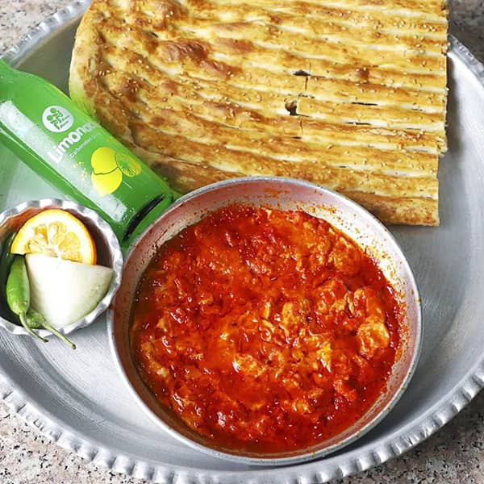
املت :
35'000 تومن
سس دست ساز گوجه + ۲ عدد تخم مرغ + نان محلی و دورچین
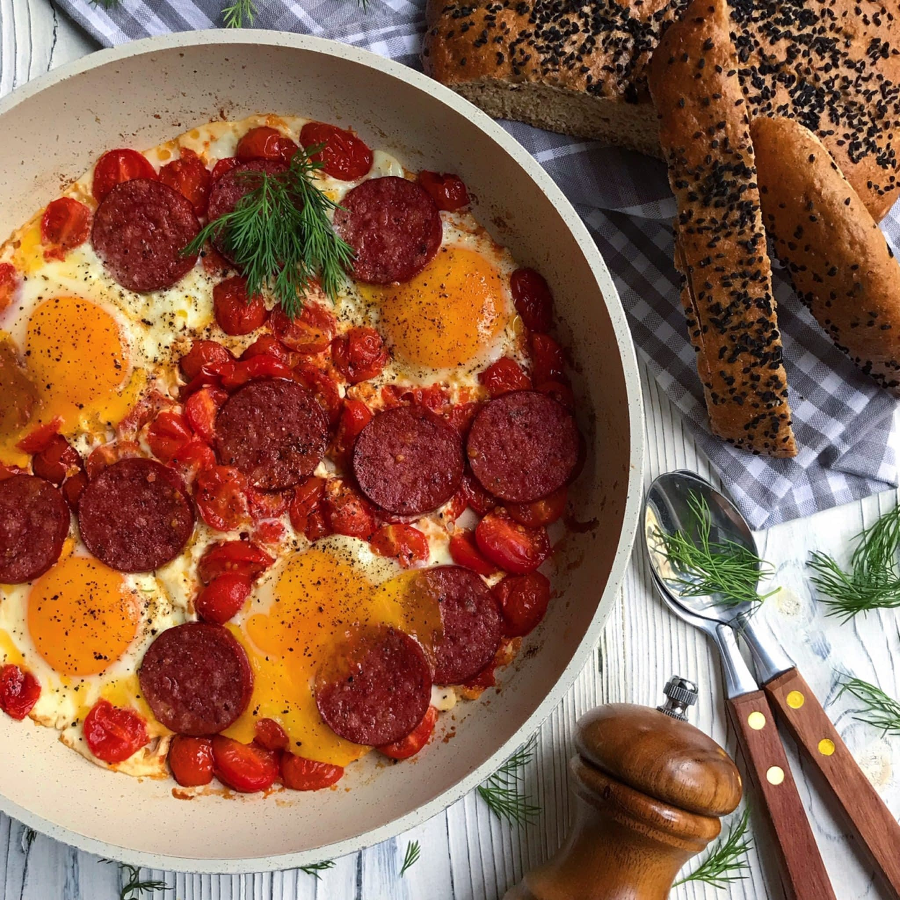
سوسیس تخم مرغ :
45'000 تومن
دو عدد تخم مرغ + سوسیس + نان محلی و دورچین
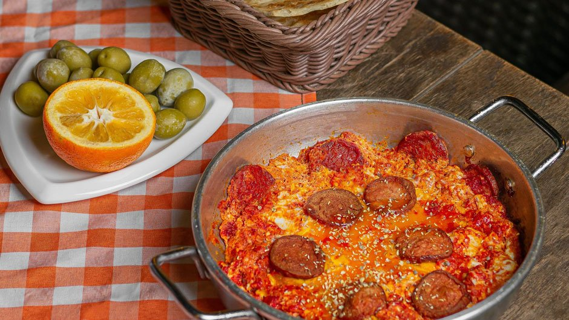
سوسیس و املت :
50'000 تومن
سس دست ساز گوجه + ۳ عدد تخم مرغ + سوسیس + نان محلی و دورچین
< قسمت ساندویچ ها >
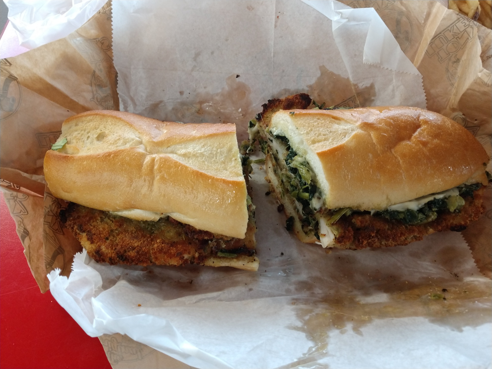
کتلت :
49'000 تومن
نان رویال + ۲ برگ کتلت + گوجه + سس مخصوص + جعفری یا کاهو
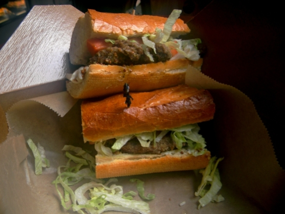
کتلت ویژه :
69'000 تومن
نان رویال سوسیس کوکتل ۷۰ درصد دو عدد کتلت سس مخصوص گوجه جعفری
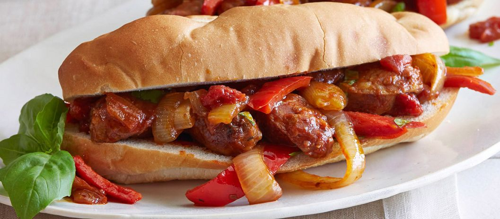
بندری :
49'000 تومن
نان رویال + بندری + گوجه + خیارشور + جعفری یا کاهو
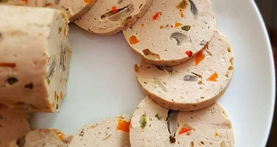
کالباس قارچ و مرغ :
49'000 تومن
نان رویال + ژامبون قارچ و مرغ + سس مخصوص+ گوجه + جعفری
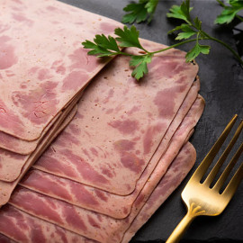
کالباس خشک (۸۰٪ ) :
49'000 تومن
نان رویال + ژامبون خشک ۸۰ + سس مخصوص + گوجه + جعفری
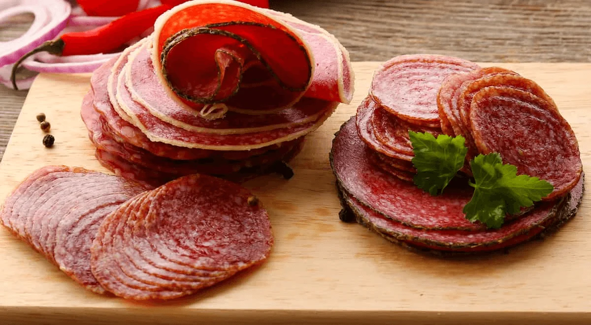
کالباس پیرونی :
49'000 تومن
نان رویال + ژامبون پپرونی + سس مخصوص + گوجه + جعفری
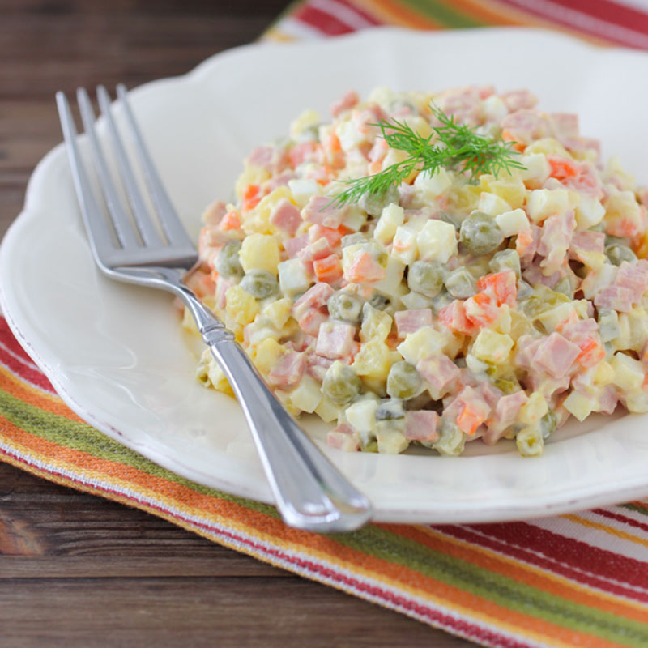
الویه :
49'000 تومن
نان رویال + الویه کالباس + گوجه + جعفری
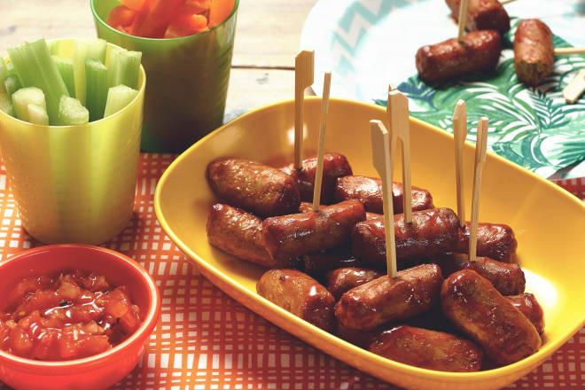
سوسیس کوکتل :
59'000 تومن
نان رویال + سوسیس کوکتل ۷۰ درصو + سس مخصوص + گوجه + کاهو + یا جعفری
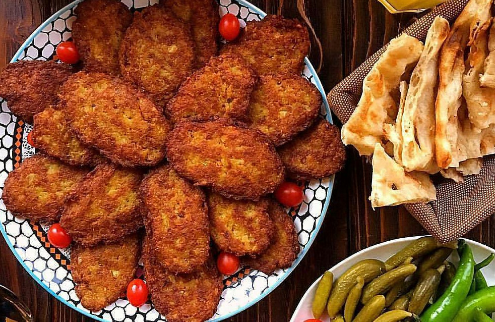
سوسیس کتلت 60%دمس
49'000 تومن
نان رویال + سوسیس کوکتل ۶۰ درصو + سس مخصوص + گوجه + کاهو + یا جعفری
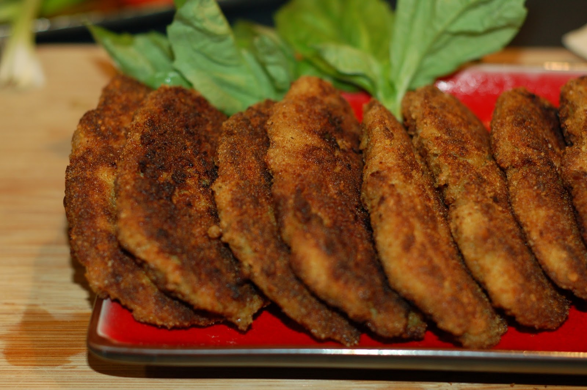
سوسیس کتلت 70%دمس
59'000 تومن
نان رویال + سوسیس کوکتل ۷۰ درصو + سس مخصوص + گوجه + کاهو + یا جعفری
< قسمت تنوری >
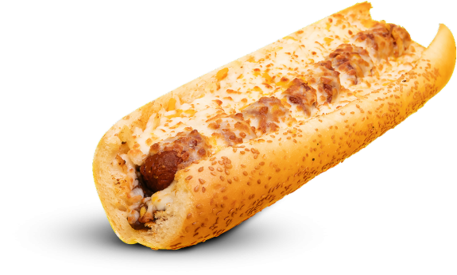
هات داگ تنوری :
140'000 تومن
هات داگ ۸۰٪ دمس + قارچ مرینت شده + چیپس + پنیر میکس مطهر + پک سس دست ساز
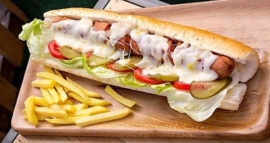
هات داگ تنوری رویال :
150'000 تومن
هات داگ ۸۰٪ دمس پنیر میکس مطهر قارچ مرینیت شده چیپس ژامبون سرخی و فلفل رنگی
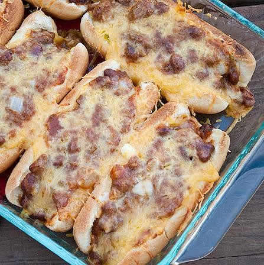
هات برگر تنوری :
175'000 تومن
صد و پنجاه گرم گرم گوشت گوساله + هات داگ دمس ۸۰٪ + قارچ مرینیت شده + فلفل رنگی + پنیر مطهر میکس + چیپس + پک سس دست ساز
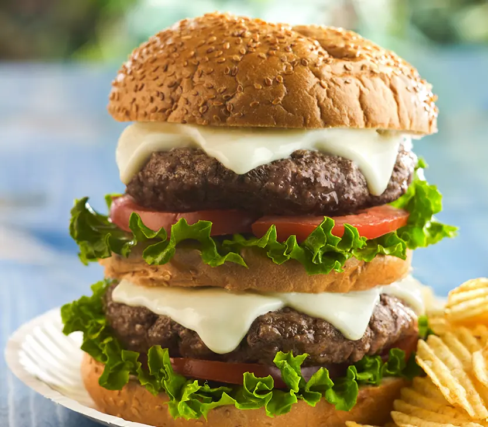
دوبل برگر تنوری
175'000 تومن
سیصد گرم گوشت سر دست گوساله (2 عدد برگر) + گوجه + سس مخصوص + پنیر گدا جعفری
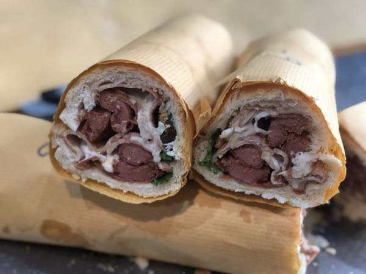
بیگ مگ تنوری :
185'000 تومن
صد و پنجاه گرم گوشت گوساله + ۴ عدد فیله مرغ مرینیت شده + چیپس + قارچ مرینیت شده + پنیر مطهر میکس + پک سس دست ساز + فلفل رنگی و سیاه دانه
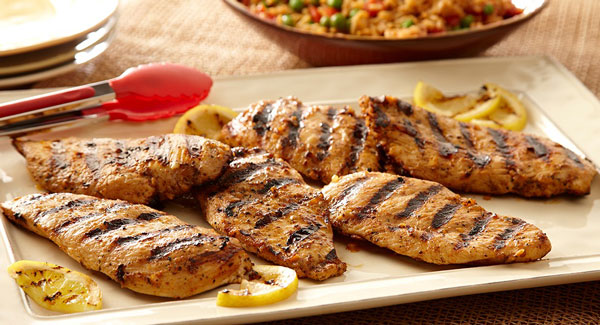
استیک مرغ تنوری :
150'000 تومن
چهار عدد فیله مرغ مرینیت شده + پنیر مطهر میکس + چیپس + قارچ مرینیت شده پک سس دست ساز
< قسمت برگر ها >
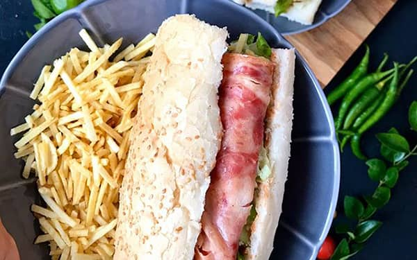
ژامبون تنوری :
140'000 تومن
ژامبون خشک ۸۰ تنوری + قارچ مرینیت شده + پنیر مطهر میکس + چیپس + پک سس دست ساز
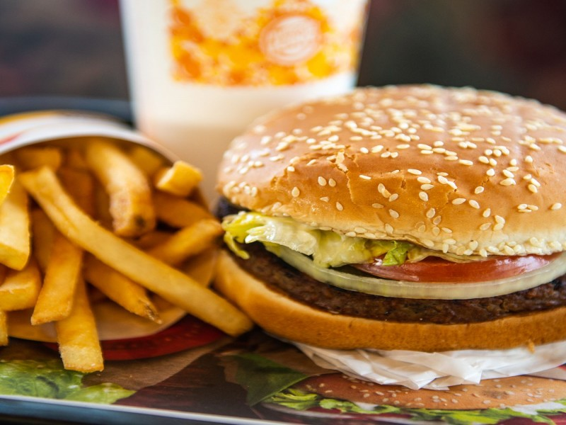
همبرگر مخصوص :
99'000 تومن
صد و پنجاه گرم گوشت سردست گوساله + سس مخصوص + گوجه + جعفری
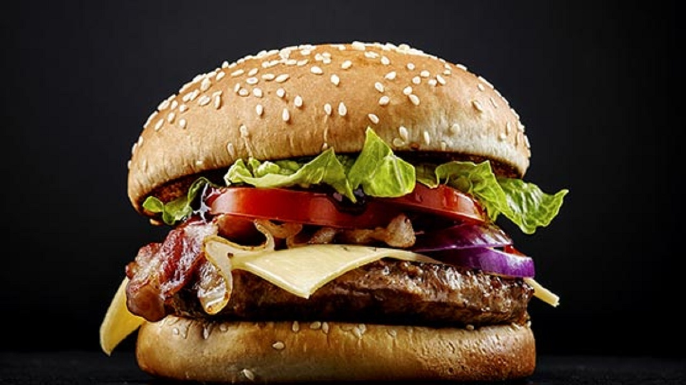
همبرگر شرکتی :
45'000 تومن
برگر شرکتی + سس مخصوص + گوجه + جعفری
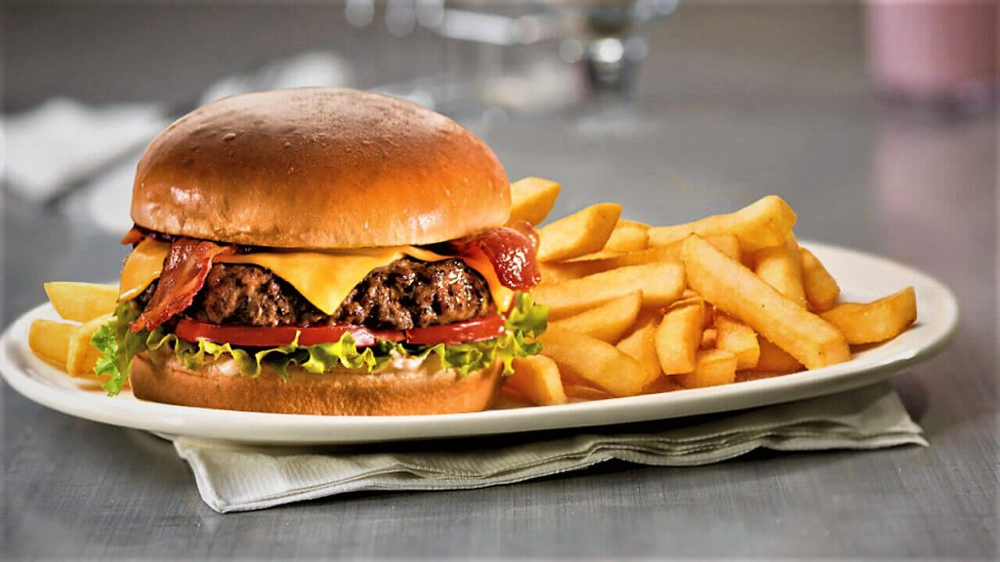
چیز برگر :
109'000 تومن
صد و پنجاه گرم گوشت سر دست گوساله + گوجه + سس مخصوص + پنیر گدا + جعفری
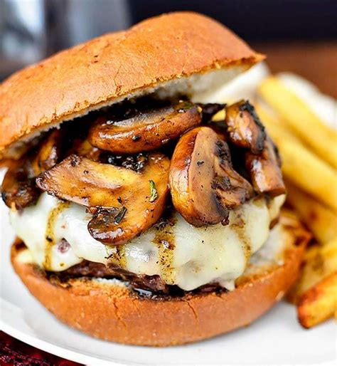
قارچ برگر :
119'000 تومن
صد و پنجاه گرم گوشت سر دست گوساله + گوجه + سس مخصوص + پنیر گدا + قارچ مرینیت شده + جعفری
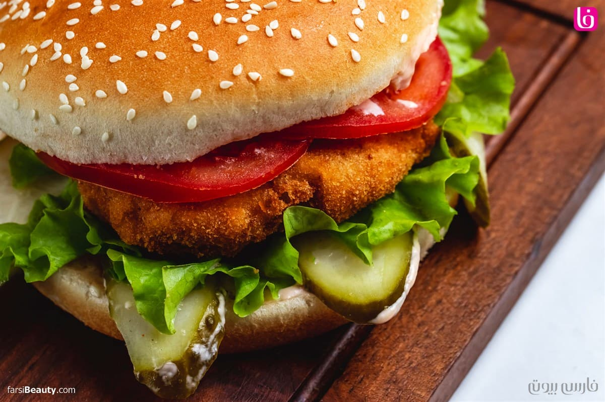
برگر فیله مرغ :
89'000 تومن
دو عدد فیله مرغ مرینیت شده + پنیر گدا + سس مخصوص + گوجه + جعفری
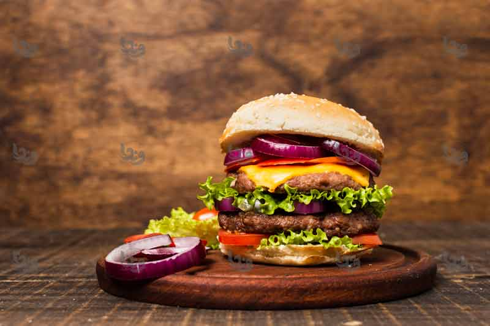
دوبل برگر :
159'000 تومن
سیصد گرم گوشت گوساله + پنیر مطهر میکس +چیپس + قارچ مرینیت شده + فلفل رنگی و سیاه دانه + پک سس دست ساز
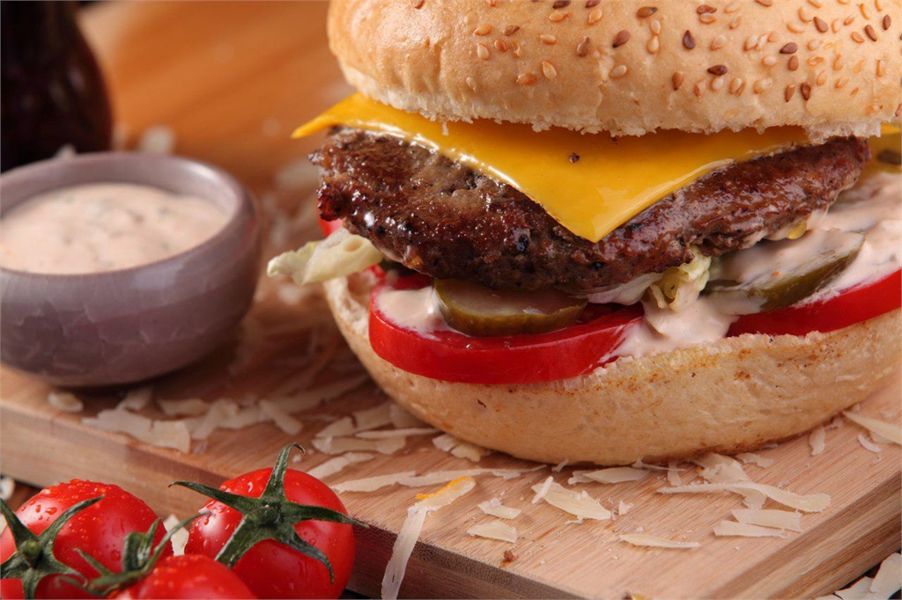